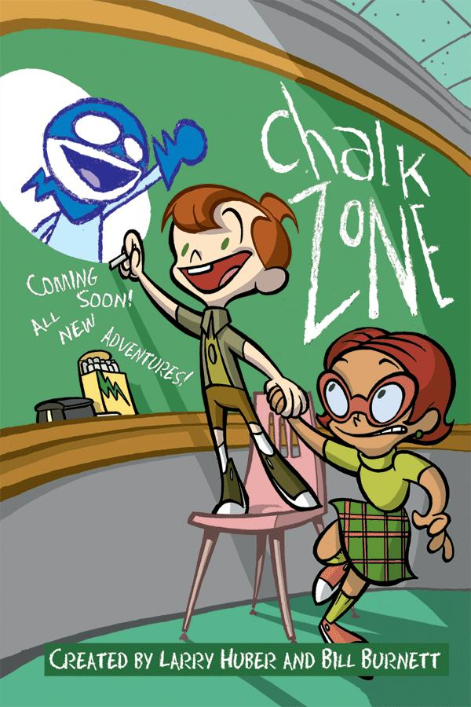
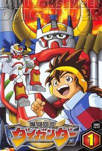

Nostalgia Masa Belia
by : A. N.
Di tahun 2011 silam, rutinitasku di Minggu pagi tak lain adalah bergegas menuju ruang TV setelah terbangun dari muara mimpi indah yang sangat nyenyak. Biasanya aku langsung mengambil remot TV dan mengganti-ganti stasiun sampai menemukan salah satu yang tidak sedang memutar iklan. Pastinya akhir pekan menjadi hari-hari favoritku karena aku bisa bersantai di pagi hari, ditemani stasiun televisi yang setia menayangkan kartun-kartun pengisi akhir pekanku dan adikku.
Tontonan kami sangat beragam di Minggu pagi. Mulai dari Doraemon yang legendaris, Ultraman favorit adikku, aksi keren Aang, Sokka, dan Katara di Avatar: The Legend of Aang, si kartun ikonik Global TV alias Spongebob Squarepants, Power Rangers, dan masih banyak tontonan seru lainnya. Kartun atau film keluarga apapun yang sedang tayang saat itu, akan otomatis kutonton hingga habis.
Halo, Pendaki! Siapa sih disini yang suka bernostalgia dengan masa lalu yang menyenangkan? Di masa pandemi ini, mengenang kembali hal-hal yang punya kaitan dengan masa lalu kita alias bernostalgia adalah salah satu hal yang bermanfaat untuk dilakukan, loh! Dilansir dari liputan6.com, bernostalgia dapat meningkatkan mood, membantu memberi arti makna kehidupan, meningkatkan hubungan dengan keluarga, mengurangi kadar stres, dan membuat seseorang akan lebih mencintai hidup yang dijalaninya. Journal of Personality and Social Psychology tahun 2015 berjudul "Remembering the real me: Nostalgia offers a window to the intrinsic self", menemukan bahwa nostalgia memberi seseorang makna untuk lebih mencintai hidup yang dijalani. Salah satu hal yang bisa membuat kita bernostalgia dengan masa kecil tentunya adalah tontonan yang rutin kita nikmati di masa lalu, kan?
Selain kartun-kartun yang sempat disebut di atas, masih banyak lagi loh kartun-kartun lain yang pasti tidak asing di mata dan telinga kalian. Kira-kira dari deretan kartun dibawah ini, yang manakah yang paling membuat kamu merasakan indahnya masa kecil lagi?
- Curious George
 Kartun yang menceritakan kisah Pria Bertopi Kuning yang memelihara seekor kera pintar bernama George, selalu menyuguhkan keseharian mereka yang menghibur kepada para penonton. Tingkah laku George memang tiada habisnya!
Kartun yang menceritakan kisah Pria Bertopi Kuning yang memelihara seekor kera pintar bernama George, selalu menyuguhkan keseharian mereka yang menghibur kepada para penonton. Tingkah laku George memang tiada habisnya!Sumber gambar : finance.yahoo.com
- Little Krishna
 Serial kartun India yang satu ini menceritakan sosok anak jahil yang pemberani, bijak, dan kuat bernama Krishna yang tinggal di desa Vrindavan. Krishna selalu berhasil menjaga desanya dari ancaman kejahatan Raja Kasim yang pernah bermimpi bahwa Krishna adalah dewa kematiannya. Adegan Krishna memainkan suling dengan indah di opening serial kartun ini sangat ikonik, loh! Kalian masih ingat, kan?
Serial kartun India yang satu ini menceritakan sosok anak jahil yang pemberani, bijak, dan kuat bernama Krishna yang tinggal di desa Vrindavan. Krishna selalu berhasil menjaga desanya dari ancaman kejahatan Raja Kasim yang pernah bermimpi bahwa Krishna adalah dewa kematiannya. Adegan Krishna memainkan suling dengan indah di opening serial kartun ini sangat ikonik, loh! Kalian masih ingat, kan?Sumber gambar : wowkeren.com
- Code Lyoko
 Serial animasi dari Prancis ini menceritakan kisah empat sekawan bernama Ulrich, Odd, Jeremie, dan Yumi yang menemukan dunia maya bernama Lyoko di mana mereka bisa masuk ke dalamnya dan memiliki kekuatan super di dunia tersebut. Cerita berfokus pada kisah mereka bersama dengan Aelita, seorang anak yang terjebak dalam Lyoko, yang berusaha menguasai dunia nyata. Siapa yang saat duduk di bangku SD dulu, sering menonton serial ini di Spacetoon?
Serial animasi dari Prancis ini menceritakan kisah empat sekawan bernama Ulrich, Odd, Jeremie, dan Yumi yang menemukan dunia maya bernama Lyoko di mana mereka bisa masuk ke dalamnya dan memiliki kekuatan super di dunia tersebut. Cerita berfokus pada kisah mereka bersama dengan Aelita, seorang anak yang terjebak dalam Lyoko, yang berusaha menguasai dunia nyata. Siapa yang saat duduk di bangku SD dulu, sering menonton serial ini di Spacetoon?Sumber gambar : aminoapps.com
- Ninja Hattori
 Mendaki gunung lewati lembah~ Sungai mengalir indah ke samudra~ Bersama teman bertualang~
Mendaki gunung lewati lembah~ Sungai mengalir indah ke samudra~ Bersama teman bertualang~Sumber gambar : en.wikipedia.org
Pasti sudah tidak asing dengan lirik lagu di atas kan? Yap, itu adalah lagu pembuka serial animasi Jepang “Nina Hattori-Kun” yang menceritakan keseharian seorang anak bernama Kenichi yang berteman dengan ninja bernama Hattori Kanzo. Fyi, Ninja Hattori baru-baru ini mulai ditayangkan kembali di stasiun televisi RCTI, loh! - Chalkzone
Menceritakan tentang dunia kapur yang menjadi tempat spesial bagi Rudy Tabootie untuk menciptakan dan menikmati banyak benda yang ia inginkan dengan berbekal kapur ajaib. Siapa saja nih, yang setelah bangun pagi langsung menyaksikan serial ini di layar televisi?Sumber gambar : tvtropes.org
- Petualangan Hachi si Lebah Madu
 Petualangan Hachi si Lebah Madu atau yang lebih sering disebut dengan Honey Bee Hutch ini punya lagu yang ikonik juga, loh! Bercerita tentang seekor Lebah bernama Hachi yang berpetualang mencari ibunya yang telah terpisah sejak bayi, serial kartun ini selalu berhasil memberi pesan moral untuk pantang menyerah dalam menghadapi segala rintangan.
Petualangan Hachi si Lebah Madu atau yang lebih sering disebut dengan Honey Bee Hutch ini punya lagu yang ikonik juga, loh! Bercerita tentang seekor Lebah bernama Hachi yang berpetualang mencari ibunya yang telah terpisah sejak bayi, serial kartun ini selalu berhasil memberi pesan moral untuk pantang menyerah dalam menghadapi segala rintangan.Sumber gambar : japantvmarket.com
- Daigunder
Selalu tayang pada jam-jam pulang sekolah di stasiun televisi Spacetoon, siapa nih yang masih ingat dengan serial ini? Daigunder berkisah tentang seorang anak bernama Akira Akebono yang mengikuti banyak turnamen robot bersama unit Daigunder, unit robot ciptaan kakeknya. Perjuangan mereka di dunia turnamen makin sulit ketika Professor Maelstrom bertekad untuk menghancurkan unit Daigunder dengan robot canggih ciptaannya.Sumber gambar : myanimelist.net
- The Magic School Bus
 Kartun yang satu ini selain menghibur, juga mengedukasi banget, loh! The Magic School Bus ini bisa berubah sedemikian rupa untuk membantu murid-murid dari Ms. Frizzle mengeksplorasi hal-hal yang sedang mereka pelajari. Mulai dari masuk ke dalam cangkang telur, kulit manusia, hingga bawah laut, bus yang satu ini bisa masuk ke dalam segala objek yang ada. Siapa nih yang dulu mau banget jadi murid Ms. Frizzle kalau sedang menonton “The Magic School Bus”?
Kartun yang satu ini selain menghibur, juga mengedukasi banget, loh! The Magic School Bus ini bisa berubah sedemikian rupa untuk membantu murid-murid dari Ms. Frizzle mengeksplorasi hal-hal yang sedang mereka pelajari. Mulai dari masuk ke dalam cangkang telur, kulit manusia, hingga bawah laut, bus yang satu ini bisa masuk ke dalam segala objek yang ada. Siapa nih yang dulu mau banget jadi murid Ms. Frizzle kalau sedang menonton “The Magic School Bus”?Sumber gambar : en.wikipedia.org
- The Backyardigans
 Hai, aku Pablo! Namaku Tyrone! Aku Uniqua! Aku Tasha! Namaku Austin! Siapa yang baca kalimat di atas pakai nada opening serial mereka? Kartun yang dulu rutin tayang di stasiun televisi Global TV ini menceritakan petualangan seru di halaman belakang rumah mereka yang berasal dari imajinasi kelima sahabat ini.
Hai, aku Pablo! Namaku Tyrone! Aku Uniqua! Aku Tasha! Namaku Austin! Siapa yang baca kalimat di atas pakai nada opening serial mereka? Kartun yang dulu rutin tayang di stasiun televisi Global TV ini menceritakan petualangan seru di halaman belakang rumah mereka yang berasal dari imajinasi kelima sahabat ini.Sumber gambar : commonsensemedia.org
- Minky Momo
 Berkisah tentang seorang anak perempuan bernama Momo yang berasal dari negeri sihir Fenarinansa, ia mampu berubah wujud menjadi sosok wanita dewasa sesuai keinginannya dengan kalung ajaibnya. Siapa nih yang dulu ingin sekali punya kalung ajaibnya Momo untuk bisa melihat sosok dewasa dari diri sendiri?
Berkisah tentang seorang anak perempuan bernama Momo yang berasal dari negeri sihir Fenarinansa, ia mampu berubah wujud menjadi sosok wanita dewasa sesuai keinginannya dengan kalung ajaibnya. Siapa nih yang dulu ingin sekali punya kalung ajaibnya Momo untuk bisa melihat sosok dewasa dari diri sendiri?Sumber gambar : pinterest.com
Dari daftar kartun-kartun di atas yang dahulu rutin ditayangkan di televisi, mana nih yang kira-kira akan kamu coba tonton kembali di akhir pekan nanti? Selamat bernostalgia, teman-teman! Tetap di rumah dan sehat selalu, Pendaki Bukit Duri!